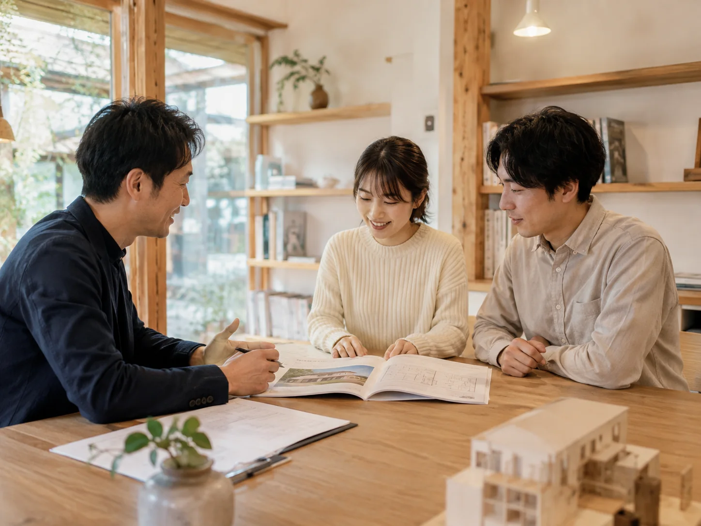
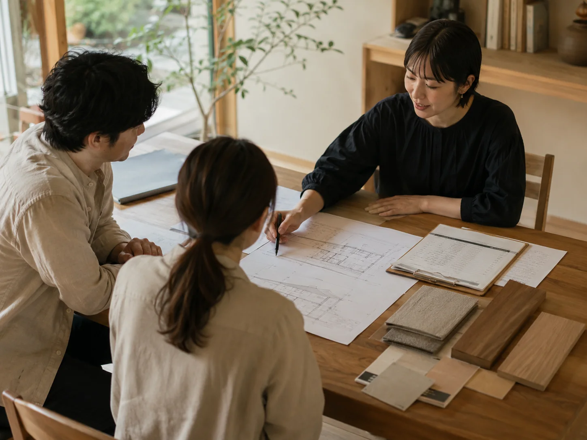
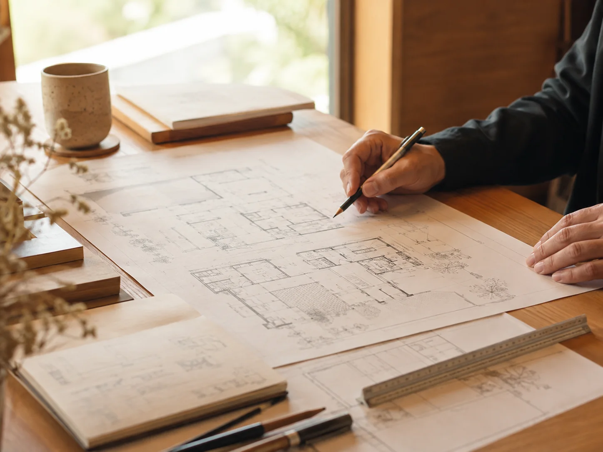
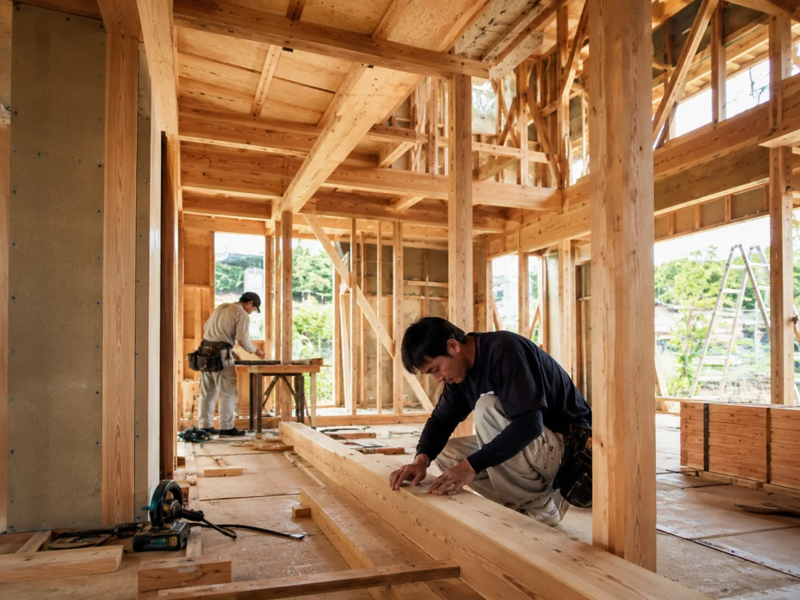
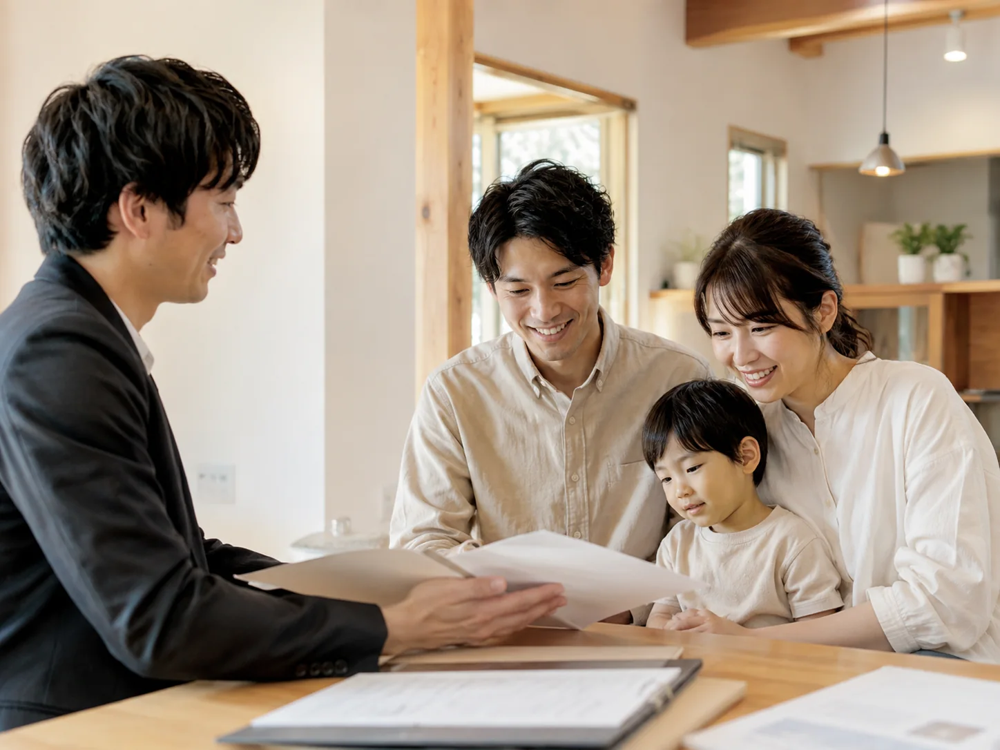
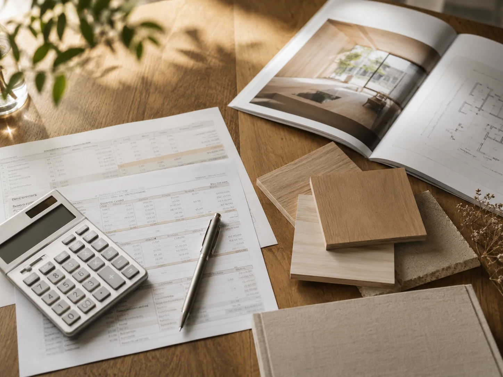

FLOW & COST
費用と流れ
ご相談からお引き渡し、その後の安心までの流れと、
費用の考え方をご紹介します。
FLOW & COST
家づくりは、
対話からはじまります。
KURAHAUSでは、無理なご提案や営業は行いません。
お客様の想いやご予算、暮らし方に寄り添いながら、
最適な家づくりを一緒に考えていきます。
PROCESS
家づくりの流れ 全5ステップ
01 ご相談・ヒアリング
ご要望やご予算、土地のことなど、丁寧にお伺いします。

プラン提案・お見積り
敷地調査を行い、プランと概算見積りをご提案します。

ご契約・詳細設計
ご契約後、詳細な設計と仕様のお打ち合わせを重ねていきます。

着工・施工
確かな施工体制で、現場を丁寧に進めていきます。

お引き渡し・アフター
完成後も、永く安心して暮らせるようサポートします。
COST
費用の考え方
家づくりにかかる費用は、建物本体だけではありません。設計、申請、外構、付帯工事、諸費用などを含めて、全体像を見ながら計画することが大切です。KURAHAUSでは、初期段階からできるだけわかりやすく、費用の考え方をご説明します。

- 01
設計・申請費用
設計、プラン作成、各種申請に関わる費用です。
- 02
本体工事費用
建物そのものにかかる工事費用です。素材や仕様、規模によって変動します。
- 03
付帯工事・諸費用
外構工事や地盤改良、登記、各種手数料などにかかる費用です。
※仕様・規模・敷地条件により費用は異なります。まずはお気軽にご相談ください。
SCHEDULE
家づくりのスケジュール目安
ご相談
1〜2週間
プラン提案
お見積り2〜4週間
ご契約
詳細設計1〜2ヶ月
着工
約4〜6ヶ月
完成・お引き渡し
約6〜8ヶ月
アフターサポート
お引き渡し後も
長期にわたり対応
※スケジュールは目安です。敷地条件やプラン内容により変動します。

まずは、
無料相談から。
理想の暮らしやご予算のこと、どんなことでもお気軽にご相談ください。
KURAHAUSと一緒に、納得のいく家づくりをはじめましょう。